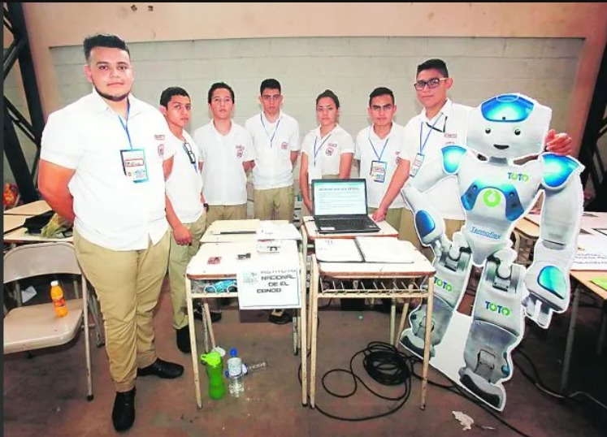

Guillermo Alejandro
Mezquita López
Mi correo:
guillermo.mezquita@catolica.edu.services
Mis redes sociales:
- Mi Github
- Mi Drive
Una Pequeña IntroducciónMe llago Guillermo Alejandro Mezquita López, soy de nacionalidad Salvadoreña
Mi Playlist
|
Mi Grado AcadémicoMi educación inicial empezo en el Colegio Alfred Binnet, en El Congo, Santa Ana
|

|
Certificaciones y CursosHasta el momento cuento un certificado, por participar en el Rally Latinoamericano de Innovacion
|
Mis HabilidadesCuento con un repertorio mediano de habilidades, en las que podemos destacar
|

Soy el primero de Derecha a Izquierda. |

Cuento con experiencia trabajando con Arduino,
en el instituto entre al club de tobotica, donde aprendi sobre su uso, y su forma de programación.

Tengo experiencia trabjando con algunos de esotos lenguajes
como lo son, C++, JavaScript, C#, Python, tambien sobre la administracion de redes.
Además de lo anterior mencionado, cuento con experiencia
en la reparacion de componente y dispositivos electronicos como herramientas, audifonos, etc.
|
Soy el primero de Derecha a Izquierda. |
Parcial IIIPara este proyecto me desempeñe como Desarrollador y diseñador,
|